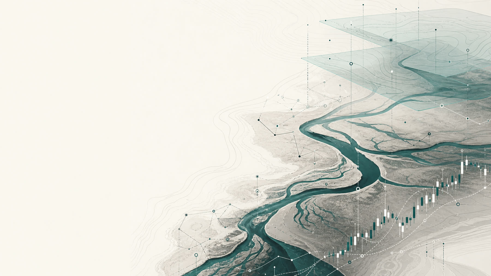
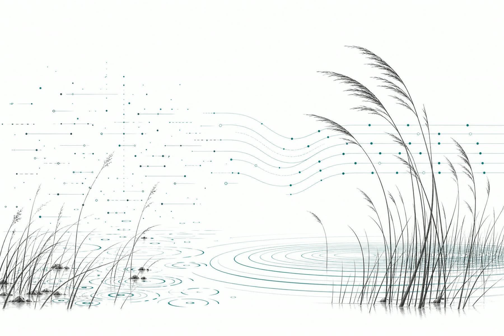
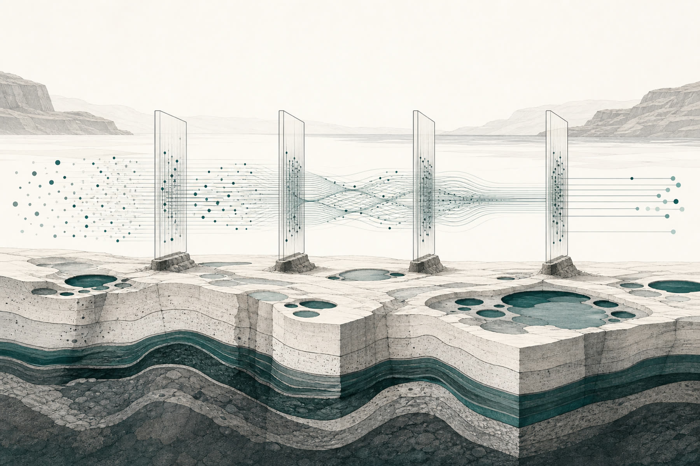

Narrative ingestion
The system absorbs the firm’s latest published research, theses, brand context, and strategic framing. This becomes the anchor for all downstream output.

Case Study · Web3 Liquidity
A Web3 liquidity firm continuously produced high-value research. We built the system that turns it into consistent, on-brand market commentary across their institutional distribution channels.
Book a free call →
The Challenge
The firm’s research team operated at a high, consistent cadence, publishing rigorous market analysis and methodology papers for a narrow, highly specific audience. The intellectual output was continuous and credible.
What was missing was the production layer between that output and the engagement it was capable of generating. Commentary on live market conditions required time the team didn’t have. The research cycle and the engagement cycle were running at different speeds.

The Solution
OM Digital built a content intelligence system that reads the firm’s latest published thinking, curates the most relevant market developments against it, and produces commentary that reflects the firm’s framing on current conditions.
Every output is written in the firm’s voice and queued for human approval before it reaches their distribution channels. The firm retains full editorial control. The system handles everything in between.
How It Works
The system absorbs the firm’s latest published research, theses, brand context, and strategic framing. This becomes the anchor for all downstream output.
Incoming news is scored continuously against an institutional signal filter. What remains is the market activity most directly relevant to the firm’s current narrative.
A structured brief bridges the firm’s active research position with current market conditions, establishing the thesis and framing for that week’s commentary.
Content is drafted in the firm’s voice and formatted for their institutional distribution channels. Each piece is reviewed and approved by the team before it goes out.
What Changed
The firm achieved what the research deserved: consistent, relevant engagement from the clients and counterparties their thinking was written for, without any additional production overhead.
Commentary connects the firm’s published thinking to live market conditions, on the same cadence the research is produced.
Published theses continue producing relevant output as markets evolve around them. Nothing goes quiet after publication.
Every output reflects the firm’s intellectual framing and terminology. Institutional positioning is consistent across every touchpoint.
The research team does the thinking. The system handles curation, synthesis, and distribution preparation.
New research, partnerships, product launches, new business arms. We build the system that ingests whatever is happening in your firm, connects it to relevant market news, and turns it into meaningful engagement with the clients who matter most.